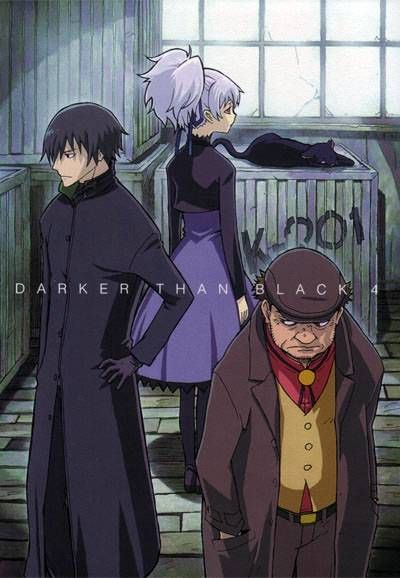

Темнее черного/Darker than Black |
|
|---|---|
Описание |
|
|
10 лет тому назад в Японии и в Южной Америке появляются паранормальные зоны, названные позже Вратами Ада и Вратами Рая. В этих зонах происходят странные и непонятные вещи: люди умирают или пропадают без вести, там растут невиданные растения, и проявляются непонятные видения. Человечество огораживает эти зоны высокими стенами. Одновременно с появлением Врат Ада небо над землей заменяется фальшивкой: Луна пропадает, и каждая звезда теперь отвечает за жизнь определенного человека. Когда человек умирает, то падает с неба и его звезда. Эти люди — контракторы. Данная история повествует о непримечательном юноше, обычным людям который представляется под именем Ли Шэньшунь, студентом по обмену. Коллеги по работе в «Организации» зовут его Хэй, а спецслужбам и другим контракторам он известен как ВК201, «Черный жнец». |
|
| ССЫЛКИ |  |